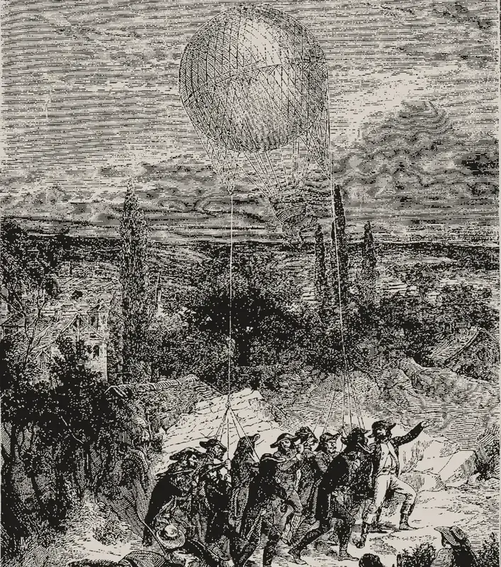

· Edición 21 · 4 min de lectura
Drones con explosivos: cada año más ataques, cuatro cuentas distintas y una ley que no avanza

Grabado publicado por Louis Figuier en Les Merveilles de la science, 1868 · Dominio público, vía Wikimedia Commons
Drones con explosivos: cada año más ataques, cuatro cuentas distintas y una ley que no avanza
En pocas palabras. Los grupos armados usan drones comerciales, de los que se compran para filmar, para soltar explosivos sobre policías, soldados y, a veces, sobre casas y escuelas. Los ataques crecen cada año. El Estado ni siquiera tiene una sola cuenta de cuántos son, y la ley que regularía estos aparatos lleva más de un año en el Congreso.
Qué pasó. El 6 de octubre se conoció un informe de inteligencia de las Fuerzas Militares y la Policía. Del 1 de enero de 2024 al 1 de octubre de 2026 contó 442 ataques con drones cargados de explosivos:
- 108 en 2024, 158 en 2025 y 176 en lo que va de 2026. Este año ya pasó al anterior, y faltan tres meses.
- 25 personas muertas y 356 heridas en esos casi tres años.
- Cauca concentra 244 ataques, más de la mitad. Le siguen Norte de Santander y Valle del Cauca.
Fuente: Informe de inteligencia de Fuerzas Militares y Policía, citado por la prensa
Ver datos
| ataques | |
|---|---|
| 2024 | 108 |
| 2025 | 158 |
| 2026 | 176 (hasta el 1 de octubre) |
La semana pasada hubo al menos 11 ataques en tres días en Condoto, Nóvita y el río Iró, en Chocó, atribuidos al ELN, y un soldado murió en otro ataque en Huila.
No son solo uniformados. Según la Defensoría del Pueblo, entre enero y mayo de 2026 los drones dejaron 21 muertos y 145 heridos, y 32 de cada 100 afectados eran civiles. Cayeron explosivos sobre 14 viviendas, tres colegios y dos estaciones de gasolina.
Cómo llegamos aquí. Piense en una cometa que, en vez de papel, carga un explosivo. Así de barato se volvió atacar desde el aire.
- El aparato está en cualquier vitrina. Son drones comerciales que cuestan unos cientos de dólares y se adaptan para soltar explosivos o estrellarse contra el blanco, según ACLED, una organización que registra hechos de violencia en el mundo.
- La técnica se contagia. Un estudio de Kerry Chávez y Ori Swed revisó 998 grupos armados entre 1995 y 2019. Lo que más predice que un grupo adopte drones es estar conectado con otros que ya los usan. Los grupos del narcotráfico tienen más probabilidad de adoptarlos.
- No se puede controlar lo que no se cuenta. Para 2025 hay al menos cuatro cifras: 149 ataques según ACLED; 158 según el informe de inteligencia; 277 contra la Fuerza Pública, según los datos que usó la Fundación Ideas para la Paz; y 333 según el Ministerio de Defensa, citado por la ONU. Miden cosas parecidas con reglas distintas. Para decidir dónde poner un equipo antidrones, la diferencia importa.
Ya pasó antes. En 1794, el ejército francés usó un globo atado para vigilar al enemigo en Fleurus. En 1849, Austria lanzó globos sin tripulación con bombas sobre Venecia. En Colombia, los grupos armados pasaron de los "tatucos", morteros hechos a mano, a los cilindros y ahora a los drones. La tecnología barata llega primero a quien ataca; la regla llega después. (Conocimiento general.)
Sin salida conocida. No encontramos una evaluación que muestre qué reduce estos ataques. Lo que se ha intentado:
- Registro. Desde 2023, la Aeronáutica Civil exige registrar los drones de 200 gramos o más. Quien va a atacar no los registra.
- Aduana. Desde el 11 de enero de 2026, una resolución de la DIAN solo deja entrar drones y sus partes por el puerto de Cartagena y el aeropuerto El Dorado, y prohíbe traerlos por correo. Aun así, 2026 ya supera a 2025 en el conteo de la Fuerza Pública.
- Una ley. El proyecto 075 de 2025, de 28 artículos, regula la importación, la venta, el registro y el uso de drones, y los sistemas para detectarlos y tumbarlos. El Ministerio de Defensa lo impulsó otra vez en agosto. No ha sido votado.
En abril, un documento técnico del servicio de la ONU contra las minas señaló que en Colombia falta una respuesta coordinada entre entidades para atender los efectos de estos ataques en la población.
Pero ojo. Los drones también fumigan cultivos, vigilan incendios y filman películas. Las empresas audiovisuales ya se quejaron de trámites y demoras para operar. Una regla pensada para quien ataca la cumple, sobre todo, quien no ataca.
Dos lecturas
Controlar cada dron. Si cada aparato y cada pieza que entra al país queda registrado, es más difícil que llegue a un grupo armado sin dejar rastro. Los ataques suben cada año; esperar a tener la regla perfecta también cuesta vidas.
No castigar al que fumiga o filma. Quien ataca compra por contrabando y no registra nada. Más trámites recaen sobre agricultores, empresas y aficionados. El dinero y el esfuerzo rinden más en detectar y neutralizar drones donde ocurren los ataques.
Quién decide y cuándo
Quién decide. El Congreso, en las comisiones segundas de Senado y Cámara, que tratan los temas de defensa, y luego en plenarias. El Ministerio de Defensa decide dónde pone los equipos antidrones.
Cuándo. No encontramos fecha de votación del proyecto.
Cómo participar. El trámite de los proyectos de ley se puede seguir en las páginas del Senado y de la Cámara, y cualquier persona puede escribirles a los congresistas de su departamento. (Conocimiento general.)
Seguimiento de la decisión
Pendiente · sin fecha fija
Congreso (comisiones segundas de Senado y Cámara): Aprobar o no el proyecto que regula la importación, venta, registro y uso de drones y las herramientas para detectarlos y neutralizarlos (075 de 2025 Senado, acumulado con el 285 de 2025 Cámara).
El Ministerio de Defensa lo impulsó de nuevo el 6 de agosto de 2026. No encontramos fecha de votación.
Para conversar
La pregunta. ¿Se debería pedir registro y permiso para comprar un dron, como para un arma, aunque la mayoría se use para filmar o fumigar?
Para leer más
Teoría del dron, de Grégoire Chamayou (2013; en español, Futuro Anterior y Ned Ediciones, 2016). Un filósofo francés analiza cómo los drones cambian la guerra: quién arriesga, quién decide y quién responde. Escrito antes de los drones baratos, ayuda a pensar qué pasa cuando atacar desde el aire deja de ser cosa de ejércitos.
¡Basta ya! Colombia: memorias de guerra y dignidad, del Centro Nacional de Memoria Histórica (2013). El informe general sobre el conflicto armado entre 1958 y 2012: cómo se transformó y a quién afectó. Se descarga gratis y de forma legal en la página del Centro.
¿Le interesa ver las fuentes?
15 fuentes: 1 académica, 3 oficiales, 1 de datos, 1 de una organización, 9 de prensa.
- Prensa Infobae. Colombia registró 442 ataques con drones explosivos entre 2024 y lo que va de 2026: Cauca concentró la mayoría de los casos
- Prensa Telecafé. Colombia registra 442 ataques con drones en casi tres años, según informe de inteligencia
- Prensa Infobae, con EFE. Atribuyen al ELN al menos 11 ataques con drones contra la fuerza pública en Colombia
- Prensa Vanguardia. Así fue el ataque con drones que dejó un soldado muerto y otro herido en Huila
- Prensa Infobae. Los ataques con drones explosivos aumentaron 146% y ya amenazan zonas rurales y urbanas de Colombia, advirtió la Defensoría del Pueblo
- Prensa El Colombiano. El «zumbido» que aterroriza poblaciones de Colombia: ataques de drones con explosivos se dispararon 146% este año
- Datos ACLED (citado por The Guardian). Drones reshape war in Colombia as deaths and injuries mount
- Oficial Servicio de las Naciones Unidas de Acción contra las Minas (UNMAS), Colombia. Sistemas de aeronaves no tripuladas con cargas explosivas: amenazas y desafíos emergentes para Colombia (documento técnico, 2026)
- Prensa Fundación Ideas para la Paz, citada por Expreso (EFE). Más territorio y más drones: los ataques a la Fuerza Pública colombiana crecen un 62 %
- Académica Modern War Institute, Academia Militar de West Point (Chávez y Swed). Los determinantes empíricos de la adopción de drones por actores armados no estatales
- Organización Instituto Nacional de Contadores Públicos (INCP). DIAN estableció nuevas medidas de control para la importación de drones (Resolución 000242 de 2025)
- Oficial Aeronáutica Civil de Colombia. Circular 100-MAUT-5.0-22-010: registro de sistemas de aeronaves no tripuladas
- Oficial Senado de la República. Comisión Segunda radica proyecto de ley para regular drones y fortalecer herramientas de seguridad
- Prensa Cambio. Gobierno radicó proyecto de ley para regular drones en Colombia: busca frenar ataques de grupos armados
- Prensa Portafolio. Empresas del sector audiovisual denuncian trabas y burocracia en regulación para operar drones en Colombia
Glosario
- Dron: aeronave sin piloto a bordo, que se maneja a distancia.
- Antidrones: equipos para detectar drones y bloquearlos, desviarlos o derribarlos.
- ACLED: organización independiente que registra hechos de violencia política en el mundo a partir de noticias y fuentes locales.
- Alerta temprana: aviso de la Defensoría del Pueblo sobre un riesgo para la población, para que las autoridades actúen antes.
- UNMAS: Servicio de las Naciones Unidas de Acción contra las Minas.
Nota metodológica
Esta es la segunda edición del día. El puntaje y los descartes del día están en la edición 20. Este tema sumó 18 de 21: alcance 2, gravedad 3, duración 2, cercanía 3 y decisión 2. Pasa las cuatro condiciones de nudo: se repite (108, 158 y 176 ataques por año), tiene un mecanismo (aparatos baratos y de libre venta, técnica que se contagia entre grupos y un Estado sin una cuenta única), alguien lo puede cambiar (Congreso, Ministerio de Defensa, DIAN y Aeronáutica Civil) y el daño es medible (muertos y heridos, y viviendas y colegios afectados).
Es un tema de violencia: va sin humor y sin paradoja del día, y no damos detalles de víctimas.
Hicimos unas 20 búsquedas en español e inglés para este tema. No pudimos abrir ningún documento completo; trabajamos con resúmenes y resultados de búsqueda. De 15 fuentes, 6 no son de prensa.
Quedó sin verificar o con límites:
- Las cifras no cuadran entre sí. El informe de inteligencia cuenta 25 muertos en casi tres años; la Defensoría, 21 solo entre enero y mayo de 2026. Puede que cuenten cosas distintas (por ejemplo, solo uniformados); no lo pudimos aclarar.
- Las cuatro cifras de 2025 vienen de fuentes con métodos distintos: la de ACLED y la del Ministerio las conocemos por la prensa y por el resumen del documento de la ONU; la de 277 es de la Fuerza Pública, citada por la Fundación Ideas para la Paz.
- El estudio de Chávez y Swed es observacional, con datos de grupos de todo el mundo hasta 2019; lo conocemos por el resumen de los autores.
- El estado del proyecto de ley lo sabemos por la prensa y por el Senado; no encontramos su ponencia más reciente.
- Que los atacantes compren por contrabando es el argumento de quienes critican el registro; no encontramos datos que lo midan.
El grabado salió de Les Merveilles de la science, de Louis Figuier (1868), y muestra a los aerosteros franceses llevando atado el globo de observación l'Entreprenant en 1794; es de otra época y lo usamos para evocar el uso del aire en la guerra, sin mostrar víctimas. Le recortamos los bordes.
De los dos libros, ninguno está en Santo & Seña. Los elegimos por el tema y confirmamos autor, año y editorial en catálogos y en la página del Centro Nacional de Memoria Histórica.